В лекции рассматриваются способы форматирования текста, его виды и параметры, доступные при работе с ним.

Текст
При работе с текстом немаловажную роль играет шрифт (font). Это понятие включает в себя гарнитуру, кегль и начертание символов. Гарнитура (typeface) — это набор букв, цифр, символов и знаков препинания сходного рисунка. Гарнитуры со специфическими свойствами объединяются в своеобразные группы — семейства шрифтов (type family).
Перечислим наиболее распространенные группы гарнитур.
-
Serif — гарнитура обыкновенная, с засечками: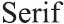
-
Sans-Serif — рубленая, без засечек:
-
Monospaced [Fixed size] — моноширинная (все ее символы имеют одинаковую ширину):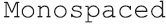
-
Script — рукописная (напоминает рукописный текст):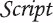
-
Decorative — декоративная (со специальными декоративными элементами — точками, штрихами и другими украшениями):
Шрифты могут иметь разные начертания (forms). Начертание определяется такими признаками:
-
насыщенностью (weight) шрифта:
-
шириной (width):
сжатый (condensed) — шрифт с уменьшенной шириной букв: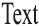
растянутый (expanded, extended) — шрифт с увеличенной шириной букв:
-
наклоном:
курсив (italic) — начертание, исторически происходящее от рукописных текстов: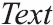
наклонный (oblique) — более жесткий по сравнению с курсивом вариант: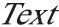
Размер шрифта — кегль — определяет высоту символов. Часто единицей измерения этой высоты является пункт (пт): один пункт равен 0,35 мм.
Инструмент Text (Текст)
В программе CorelDRAW существует два основных типа текста:
-
Paragraph Text (Абзацный текст) — для создания больших блоков текста с последующим форматированием стандартными способами;
-
Artistic Text (Строчный текст) — для создания коротких текстовых заголовков; кроме того такой текст удобен для последующего применения графических эффектов.
Для работы с текстом в программе CorelDRAW предназначен инструмент Text (Текст) ( ). Рассмотрим параметры, которые отображаются на панели свойств при выборе данного инструмента (рис. 4.1).
). Рассмотрим параметры, которые отображаются на панели свойств при выборе данного инструмента (рис. 4.1).
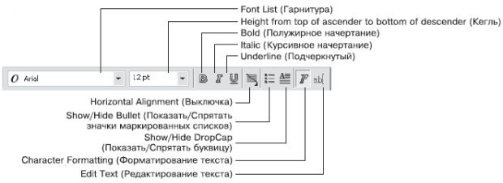
Рис. 4.1 Панель свойств при активном инструменте Text (Текст)
Гарнитуру и кегль шрифта задают с помощью следующих параметров:
Вариант начертания шрифта можно выбрать с помощью кнопок:
-
Bold (Полужирный) — 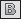
-
Italic (Курсив)- 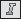
-
Underline (Подчеркнутый)- 
Кроме того, для работы с текстом (чаще всего — абзацным) используют следующие параметры.
-
Взаимное расположение строк внутри больших блоков текста выбирают с помощью кнопки Horizontal Alignment (Выключка):
- None (Нет)-
- Left-
 (По левому краю)
(По левому краю)
- Center- (По центру)- 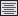
- Right (По правому краю) -
- Full Justify- 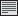 (По ширине)
- Force Justify- 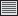 (Полное выравнивание по ширине)
-
При работе со списками можно использовать такие кнопки:
- Show/Hide Bullet (Показать/Спрятать значки маркированных списков);
- Show/Hide DropCap (Показать/Спрятать буквицу).
-
Для форматирования и редактирования текста предназначены следующие кнопки:
Character Formatting (Форматирование текста) — приводит к появлению пристыковываемого окна Character Formatting (Форматирование текста), в котором можно настроить необходимые параметры;
Edit Text (Редактирование текста) — открывает одноименное диалоговое окно, содержащее параметры, позволяющие форматировать и редактировать содержимое текстового фрагмента.
Абзацный текст (Paragraph Text)
Абзацный текст чаще всего используют для вставки больших текстовых блоков.
Чтобы создать такой текст, необходимо выполнить следующие действия.
-
Выбрать инструмент Text (Текст) ().
-
Перевести указатель (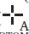) на рабочую область, нажать кнопку мыши и, не отпуская ее, перетащить мышь. При этом будет создано прямоугольное поле для ввода текста.
-
Закончить создание поля освобождением кнопки мыши.
-
Ввести требуемый текст (рис. 4.2).
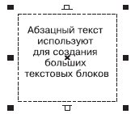
Рис. 4.2 Пример простого абзацного текста
Чтобы добавить абзацный текст в существующую фигуру, необходимо выполнить такие действия.
-
Выбрать инструмент Text (Текст) ().
-
Расположить указатель мыши вблизи внутренней границы контура фигуры, в которую необходимо вписать текст.
-
Когда указатель примет вид 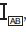, щелкнуть кнопкой мыши.
-
4Ввести требуемый текст (рис. 4.3).
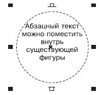
Рис. 4.3 Абзацный текст внутри фигуры
Размер габаритной рамки абзацного текста можно изменить перетаскиванием любого управляющего маркера (такие маркеры располагаются в углах и на серединах сторон). Указатель мыши при этом примет вид двунаправленной стрелки (рис. 4.4).
Повторный щелчок на выделенном блоке абзацного текста приводит к тому, что управляющие маркеры габаритной рамки принимают вид двунаправленных стрелок, расположенных вдоль рамки. Кроме того, появляется маркер центра вращения, с помощью которого можно поворачивать и наклонять текст (рис. 4.5).
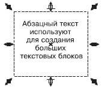
Рис. 4.4 Использование маркеров для изменения размеров рамки
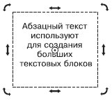
Рис. 4.5 Выделенный абзацный текст в режиме вращения и искажения
Строчный текст (Artistic Text)
Строчный текст используют в основном для создания коротких заголовков или в тех случаях, когда впоследствии предполагается применение графических эффектов.
Чтобы добавить строчный текст, необходимо выполнить такие действия.
-
Выбрать инструмент Text (Текст) ().
-
Переведя указатель () на рабочую область, щелкнуть кнопкой мыши.
-
Ввести требуемый текст. В результате вокруг созданного текстового объекта появится невидимая габаритная рамка, представленная 8 управляющими маркерами и центром (рис. 4.6).
Управляющие маркеры можно использовать для изменения геометрических размеров строчного текста (рис. 4.7).
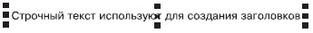
Рис. 4.6 Строчный текст
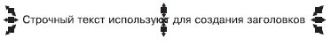
Рис. 4.7 Пример использования маркеров габаритной рамки
Повторный щелчок на выделенном строчном тексте приводит к замене управляющих маркеров габаритной рамки в виде прямоугольников маркерам в виде двунаправленных стрелок, а также появлению центра вращения (рис. 4.8).
Управляющие маркеры габаритной рамки, которые имеют вид двунаправленных стрелок и располагаются на серединах сторон, используются для сдвига текста, а маркеры в углах габаритной рамки применяются для вращения объекта вокруг центра вращения.
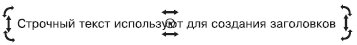
Рис. 4.8 Пример выделенного строчного текста в режиме вращения и искажения

СОВЕТ. Если необходимо точно трансформировать, зеркально отобразить, повернуть или наклонить строчный или абзацный текст, лучше вызвать панель Transform (Трансформирование). Для этого следует выполнить команду меню Window - Toolbars - Transform (Окно - Панели инструментов - Преобразование).
Форматирование текста
К абзацному и строчному тексту можно применять стандартные способы форматирования.
Чтобы отформатировать текст, его необходимо предварительно выделить. Затем следует выполнить такие действия.
-
Выбрать инструмент Text (Текст) ().
-
Установить указатель мыши (он должен иметь вид "I") в начало фрагмента текста, который необходимо выделить.
-
Нажав кнопку мыши и удерживая ее, переместить указатель в конец требуемого фрагмента.
-
Выделив нужный фрагмент текста, отпустите кнопку мыши.
Выделенный текст обозначится затенением фона (рис. 4.9).
Выделенный фрагмент текста можно форматировать с помощью панели свойств (см. рис. 4.1).
Кроме того, для форматирования текста можно использовать пункты меню Text (Текст) — Character Formatting (Форматирование текста) или Paragraph Formatting (Форматирование абзаца).
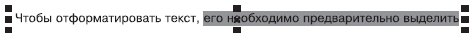
Рис. 4.9 Пример выделенного фрагмента текста
При выборе этих пунктов в правой части экрана появляются пристыковываемые окна — соответственно Character Formatting (Форматирование текста) и Paragraph Formatting (Форматирование абзаца), содержащие все возможные параметры форматирования текста (рис. 4.10).
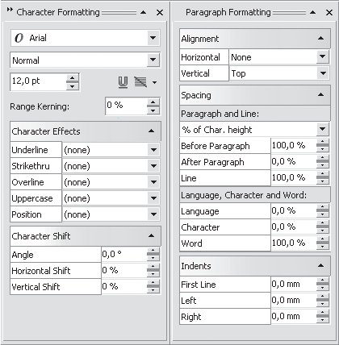
Рис. 4.10 Пристыковываемые окна Character Formatting (Форматирование текста) и Paragraph Formatting (Форматирование абзаца)
СОВЕТ. Пристыковываемое окно Character Formatting (Форматирование текста) можно также вызвать нажатием кнопки Character Formatting (Форматирование текста) ( ), расположенной на панели свойств.
), расположенной на панели свойств.
Изменение кегля
Чтобы изменить кегль шрифта отдельного слова или символа, необходимо выполнить следующие действия.
-
Выбрать инструмент Text (Текст) ().
-
Установить указатель мыши (он должен иметь вид "I") в начало фрагмента текста, который необходимо выделить.
-
Нажав кнопку мыши и удерживая ее, переместить указатель в конец требуемого фрагмента.
-
Выделив нужный фрагмент текста, отпустите кнопку мыши.
-
Воспользоваться списком Height from top of ascender to bottom of descender (Кегль) (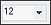), расположенным на панели свойств.
ПРИМЕЧАНИЕ. Для изменения кегля можно также выполнить команду Text Character Formatting (Текст Форматирование символов) и в появившемся пристыковываемом окне Character Formatting (Форматирование текста) задать необходимое значение в поле Height from top of ascender to bottom of descender (Кегль) (рис. 4.11).
Значение в данном поле определяет высоту букв в пунктах. Как уже упоминалось, пункт (point, pt) — это единица измерения кегля. Для сравнения замечу, что один дюйм (2,54 см) содержит 72 пункта.
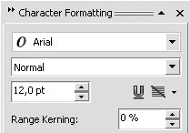
Рис. 4.11 Поле Height from top of ascender to bottom of descender (Кегль) в пристыковываемом окне Character Formatting (Форматирование текста)
Изменение гарнитуры шрифта текста
-
Выбрать инструмент Text (Текст) ().
-
Установить указатель мыши (он должен иметь вид "I") в начало фрагмента текста, который необходимо выделить.
-
Нажав кнопку мыши и удерживая ее, переместить указатель в конец требуемого фрагмента.
-
Выделив нужный фрагмент текста, отпустите кнопку мыши.
-
Выберите желаемую гарнитуру из списка Font List (Гарнитура) (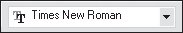), расположенного на панели свойств.
ПРИМЕЧАНИЕ. Для изменения гарнитуры шрифта можно также воспользоваться командой Text - Character Formatting (Текст - Форматирование текста). Как упоминалось, при выполнении этой команды на экране появляется пристыковываемое окно Character Formatting (Форматирование текста), в котором в данном случае следует обратить внимание на список Font List (Гарнитура) (рис. 4.12).

Рис. 4.12 Список Font List (Гарнитура) на пристыковываемом окне Character Formatting (Форматирование текста)
Кроме того, пристыковываемое окно Character Formatting, (Форматирование текста) содержит свиток Character Effects (Эффекты шрифта) (рис. 4.13).
В данном свитке расположены такие параметры:
ПРИМЕЧАНИЕ. Чтобы развернуть параметры свитка Character Effects (Эффекты шрифта) пристыковываемого окна Character Formatting (Форматирование текста), воспользуйтесь кнопкой , расположенной справа от заголовка свитка.
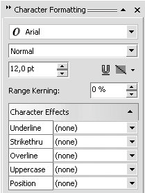
Рис. 4.13 Свиток Character Effects (Эффекты шрифта) пристыковываемого окна Character Formatting(Форматирование текста)
Параметры Underline (Подчеркивание), Strikethru (Зачеркивание) и Overline (Черта сверху) обладают следующими дополнительными настройками:
-
(none) (нет);
-
Single Thin (Одинарная тонкая);
-
Single Thin Word (Одинарная тонкая, применяется только к словам);
-
Single Thick (Одинарная толстая);
-
Single Thick Word (Одинарная толстая, применяется только к словам);
-
Double Thin (Двойная тонкая);
-
Double Thin Word (Двойная тонкая, применяется только к словам);
-
Edit (Редактирование). Выбор пункта Edit (Редактирование) приведет к открытию диалогового окна Edit Underline Style (Редактирование стиля подчеркивания), в котором настраивают параметры линии — Thickness (Толщина), Baseline Shift (Сдвиг) — и указывают единицы измерения (Line Setting Units) (рис. 4.14). В качестве единиц измерения можно выбрать points (пункты) или % of Pt. sizen (% от размера шрифта).
-
Параметр Uppercase (Верхний регистр) обладает следующими настройками:
- (none) (нет);
- Small CAPS (Малые прописные);
- All CAPS (Все прописные);
-
Список параметра Position (Положение) содержит такие варианты:
- (none) (нет);
- Subscript (Нижний индекс);
- Superscript (Верхний индекс).
Свиток Character Shift (Сдвиг текста) содержит следующие изменяемые параметры (рис. 4.15):
При изменении шрифтового оформления текста, в частности при изменении параметров форматирования в свитке Character Shift (Сдвиг шрифта) (вертикальный сдвиг, вращение) зачастую требуется отказаться от выполненных изменений и вернуть текст к первоначальному виду. Для этих целей в меню Text (Текст) существуют две команды:
Если первая команда всего лишь аккуратно располагает буквы вдоль базовой линии, то вторая еще и выравнивает их таким образом, чтобы они были размещены перпендикулярно к базовой линии. Команду Straighten Text (Выравнивание текста) удобно использовать после поворота отдельных букв.
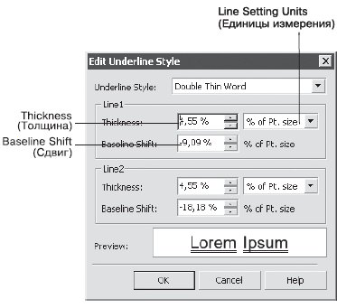
Рис. 4.14 Диалоговое окно Edit Underline Style (Редактирование стиля подчеркивания)
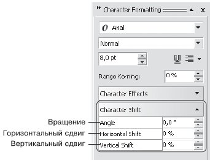
Рис. 4.15 Свиток Character Shift (Сдвиг текста) пристыковываемого окна Character Formatting (Форматирование текста)
ПРИМЕЧАНИЕ. Для форматирования абзацев можно выполнить команду меню Text - Paragraph Formatting (Текст - Форматирование абзаца). При этом на экране появится пристыковываемое окно Paragraph Formatting (Форматирование абзаца), содержащее возможные параметры видоизменения текста (рис. 4.16).
Выравнивание
Выравнивание по горизонтали (выключка) определяет распределение текста по ширине страницы. Основные типы выравнивания представлены на рис. 4.17.
Чтобы настроить горизонтальное выравнивание текста, необходимо действовать следующим образом.
-
Выбрать инструмент Text (Текст) ().
-
Установить текстовый курсор в любом месте абзаца.
-
Воспользоваться кнопкой Horizontal Alignment (Горизонтальное выравнивание) ( ), расположенной на панели свойств, для выбора требуемого варианта выравнивания текстовых строк абзаца.
), расположенной на панели свойств, для выбора требуемого варианта выравнивания текстовых строк абзаца.
ПРИМЕЧАНИЕ. ПРИМЕЧАНИЕДля форматирования абзацев можно выбрать в меню Text (Текст) пункт Paragraph Formatting (Форматирование абзаца). Это приведет к появлению в правой части экрана одноименного пристыковываемого окна, в котором можно воспользоваться раскрывающимся списком Horizontal (Горизонтальное) свитка Alignment (Выравнивание) (рис. 4.18).
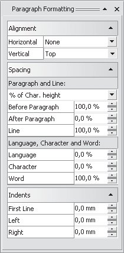
Рис. 4.16 Пристыковываемое окно Paragraph Formatting (Форматирование абзаца)
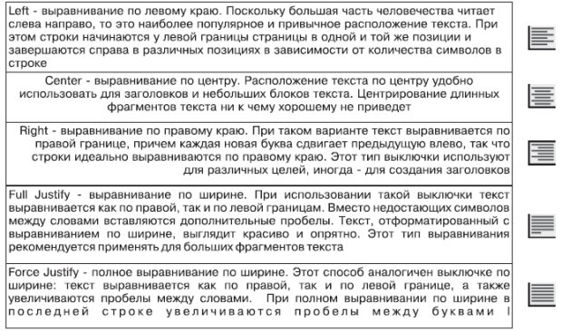
Рис. 4.17 Типы выключки
Интервалы
При использовании конкретного шрифта мы чаще всего довольствуемся заданным по умолчанию расстоянием между буквами (межсимвольным расстоянием), а также между строками в абзацах (междустрочным расстоянием).
Чтобы изменить межсимвольное расстояние, выполните такие действия.
-
Выбрать инструмент Text (Текст) ().
-
Установить текстовый курсор в любом месте абзаца.
-
В пристыковываемом Paragraph Formatting (Форматирование абзаца) раскройте свиток Spacing (Интервал) и в области Language, Character and Word (Язык, символ и слово) в поле Character (Символ) введите требуемое значение (рис. 4.19).
-
Нажмите на клавиатуре клавишу Enter.
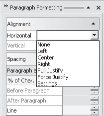
Рис. 4.18 Раскрывающийся список Horizontal (Горизонтальное) свитка Alignment (Выравнивание) в пристыковываемом окне Paragraph Formatting (Форматирование абзаца)
Изменять межсимвольное расстояние для больших фрагментов текста не рекомендуется, поскольку в большинстве случаев это приводит к негативному восприятию читателем преподносимой информации (рис. 4.20).
Совсем по-другому дело обстоит с названиями и заголовками, то-есть короткими фрагментами текста. Зачастую изменение межсимвольного расстояния в заголовках позволяет получить требуемый эффект привлекательности и обратить внимание читателя.

Рис. 4.19 Поле Character (Символ) в свитке Spacing (Интервал)
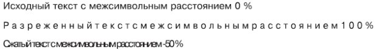
Рис. 4.20 Влияние межсимвольного расстояния на представление текста
Чтобы изменить расстояние между словами, необходимо выполнить следующие действия.
-
Выбрать инструмент Text (Текст) ().
-
Установить текстовый курсор в любом месте абзаца.
-
В пристыковываемом Paragraph Formatting (Форматирование абзаца) раскройте свиток Spacing (Интервал) и в области Language, Character and Word (Язык, символ и слово) в поле Word (Между словами) ввести требуемое значение (рис. 4.21).
-
Нажмите на клавиатуре клавишу Enter.
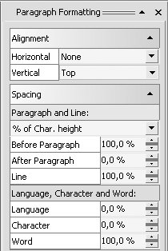
Рис. 4.21 Поле Word (Слово) в свитке Spacing (Интервал)
Расстояние между словами существенно влияет на скорость чтения и качество восприятия информации. Величина пробела определяется размером букв выбранного шрифта. Чтобы сделать текст читабельным, следует специально увеличить расстояние между словами (рис. 4.22).

Рис. 4.22 Влияние величины интервала между словами на восприятие текста
Чтобы изменить междустрочный интервал, следует выполнить такие действия.
-
Выбрать инструмент Text (Текст) ().
-
Установить текстовый курсор в любом месте абзаца.
-
В пристыковываемом окне Paragraph Formatting (Форматирование абзаца) раскрыть свиток Spacing (Интервал) и в области Paragraph and Line (Абзац и строка) в поле Line (Междустрочный) ввести требуемое значение (рис. 4.23).
-
Нажмите на клавиатуре клавишу Enter.

Рис. 4.22 Поле Line (Междустрочный) в свитке Spacing (Интервал)
Чаще всего междустрочный интервал изменяют для достижения опеределенного эффекта в больших фрагментах текста (рис. 4.23).
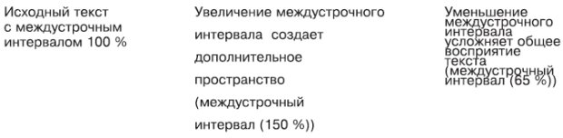
Рис. 4.23 Влияние междустрочного интервала на восприятие текста
Текст вдоль кривой
Эффект Fit Text To Path (Разместить текст вдоль кривой) можно применить только к строчному тексту. При этом текст набирают вдоль некоторой кривой, которая может быть разомкнутой или замкнутой (рис. 4.24).
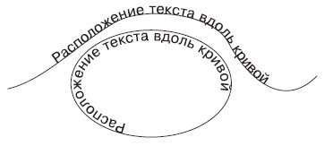
Рис. 4.24 Примеры текста, расположенного вдоль кривой
Чтобы расположить текст вдоль кривой, необходимо выполнить следующие действия.
-
Выбрать инструмент Text (Текст) ().
-
Расположить указатель мыши вблизи контура линии, вдоль которой необходимо разместить текст.
-
Когда указатель примет вид 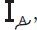, щелкнуть кнопкой мыши. Возле кривой появится текстовый курсор.
-
Ввести требуемый текст.
Чтобы расположить вдоль кривой имеющийся строчный текст, следует выполнить такие действия.
-
Выбрать инструмент Text (Текст) ().
-
Щелкнуть на набранном строчном тексте.
-
В меню Text (Текст) выбрать команду Fit Text To Path (Разместить текст вдоль кривой).
-
Подвести указатель мыши к кривой. Программа покажет, как текст может разместиться вдоль указанного пути. Выбрав нужный вариант, следует щелкнуть кнопкой мыши.
В результате выполнения указанных действий текст и кривая станут одним объектом.
Рассмотрим основные параметры, отображающиеся на панели свойств при выбранном тексте, расположенном вдоль кривой (рис. 4.25).
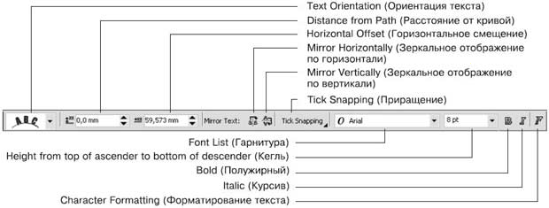
Рис. 4.25 Панель свойств при выборе текста, расположенного вдоль кривой
-
Text Orientation (Ориентация текста) — позволяет указать расположение символов относительно криволинейных участков пути.
-
Distance from Path (Расстояние от кривой) — позволяет задать значение отступа текста от кривой, являющейся путем (положительные значения — над кривой, отрицательные — под кривой).
-
Horizontal Offset (Горизонтальное смещение) — позволяет задать произвольное расположение текста вдоль контура.
-
Mirror Text (Зеркальное отображение текста) — позволяет изменить направление расположения текста, заданное по умолчанию (по часовой стрелке), противоположным (рис. 4.26). Для этого необходимо последовательно нажать кнопки Mirror Horizontally (Зеркальное отображение по горизонтали) и Mirror Vertically (Зеркальное отображение по вертикали).
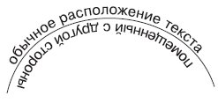
Рис. 4.26 Результат последовательного применения зеркального отображения по горизонтали и по вертикали
СОВЕТ. Произвольное расположение текста вдоль контура может быть задано и перемещением маркера в виде небольшого красного ромбика, располагающегося в начале текста.
СОВЕТ. Чтобы получить доступ к кривой, вдоль которой расположен текст, необходимо нажать на клавиатуре клавишу Ctrl и, удерживая ее, щелкнуть на необходимой линии.
Символы
Кроме ввода символов с клавиатуры, можно использовать специальные символы, входящие в определенные группы шрифтов.
Чтобы получить доступ ко всем символам, входящим в группу конкретного семейства шрифтов, необходимо выполнить команду Text - Insert Symbol Character (Текст - Вставить символ). При этом появится пристыковываемое окно Insert Character (Вставить символ) (рис. 4.27).
Группу шрифтов можно выбрать с помощью раскрывающегося списка Font (Шрифт) (рис. 4.28).
Для просмотра всех символов, входящих в выбранный набор, нужно использовать вертикальную полосу прокрутки. Чтобы вставить требуемый символ, выберите его и дважды щелкните на нем кнопкой мыши.
К символам, добавленным таким образом, можно применять общие правила форматирования текста.
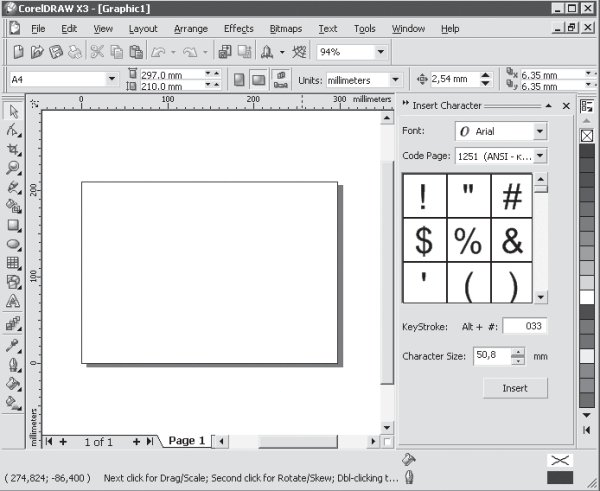
Рис. 4.27 Пристыковываемое окно Insert Symbol Character (Вставить символ)

Рис. 4.28 Список шрифтов
Выводы
В программе CorelDRAW текст представляет собой самостоятельный объект, который можно использовать при создании составных коллажей. Поскольку любой шрифт, состоящий из набора символов, является художественно завершенным объектом, то все действия, связанные с его видоизменением, лучше производить с помощью инструментов форматирования. Не следует изменять ширину или высоту такого объекта с помощью стандартных методов трансформации (если, конечно, это не обосновано композицией).